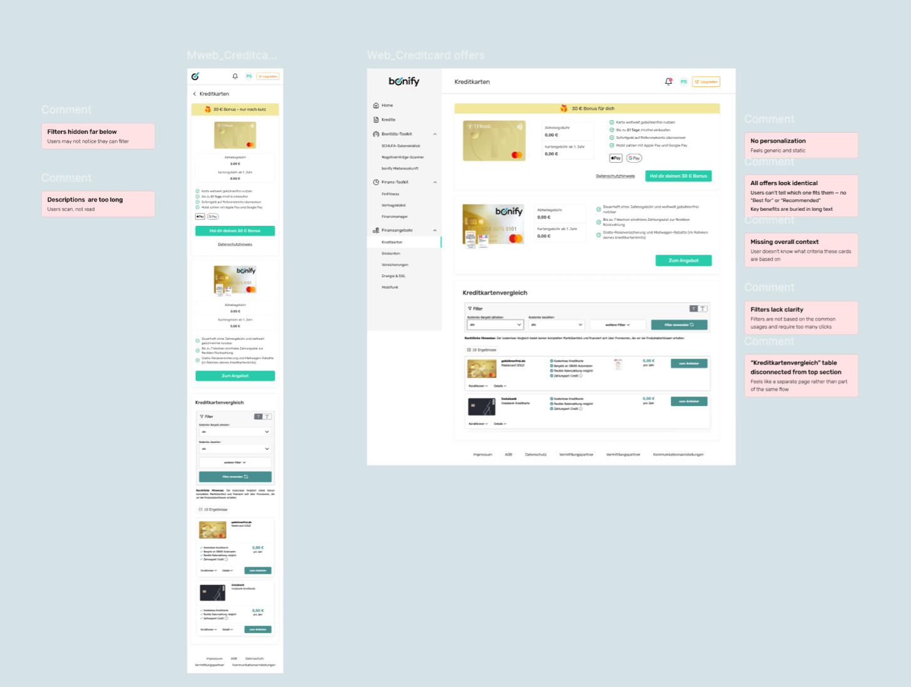
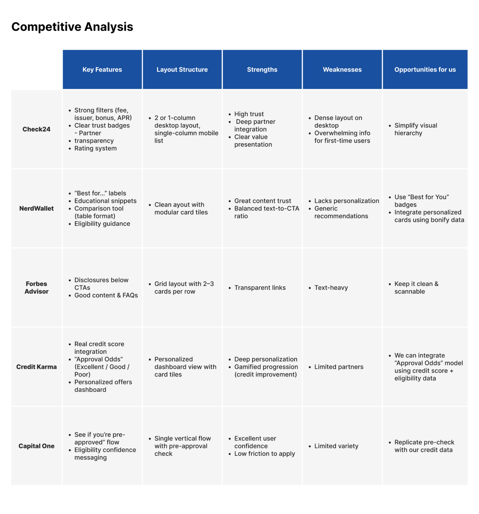
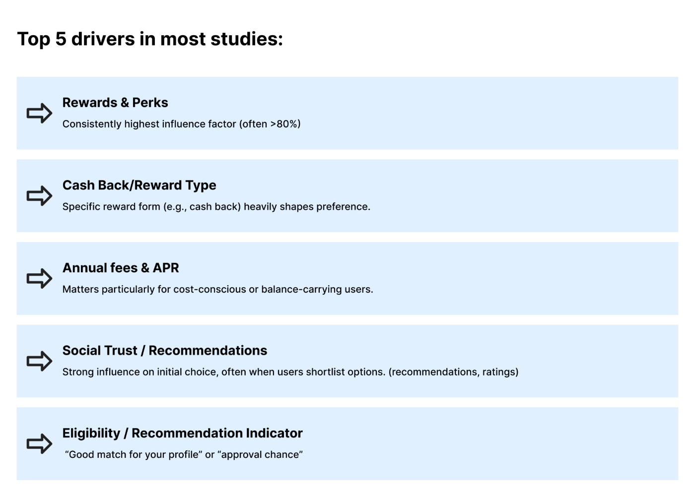
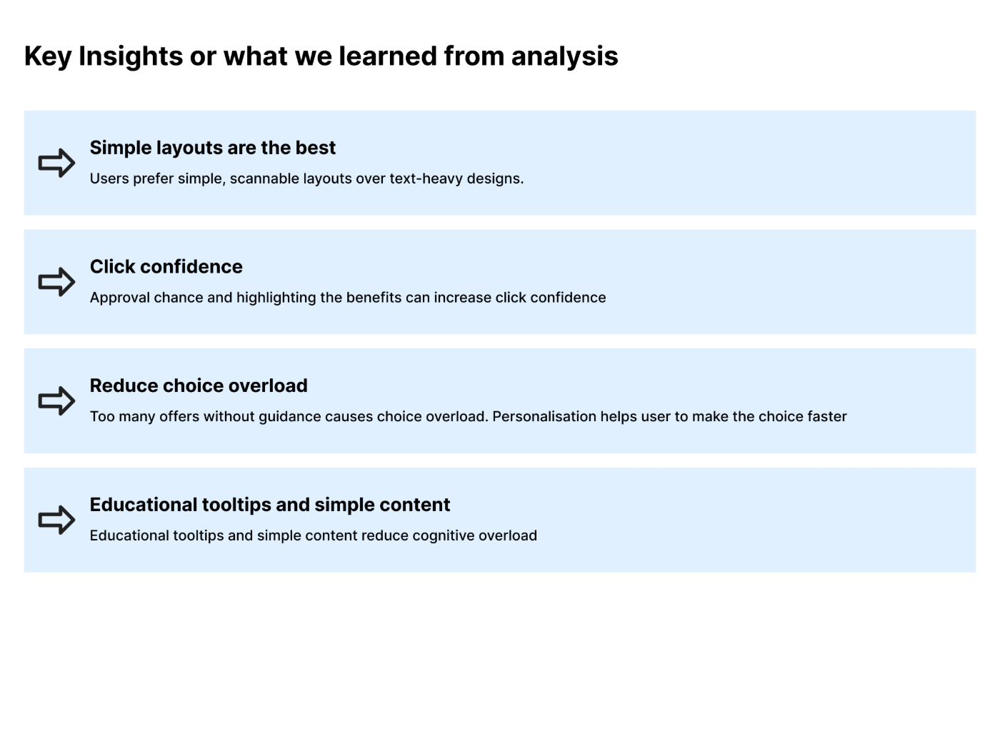
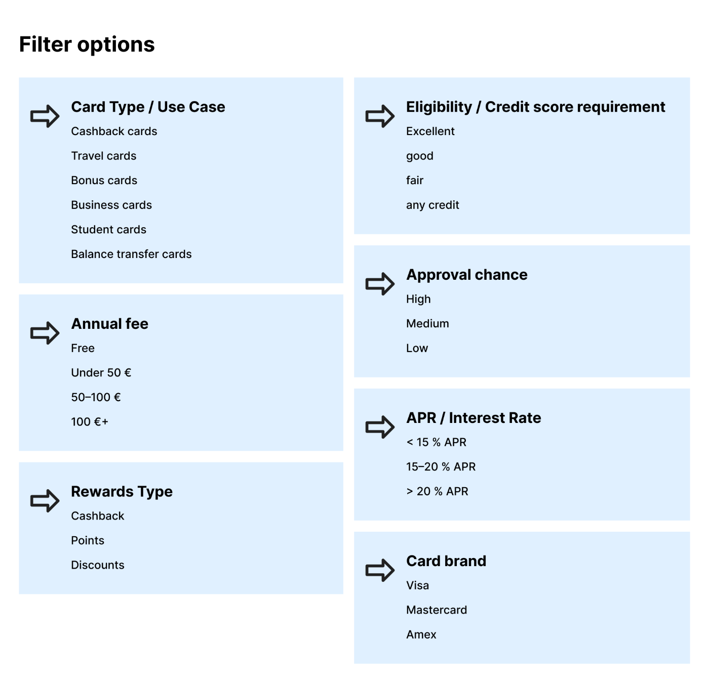
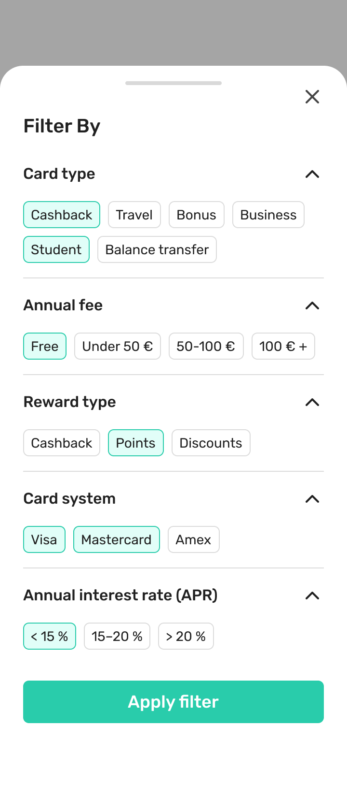
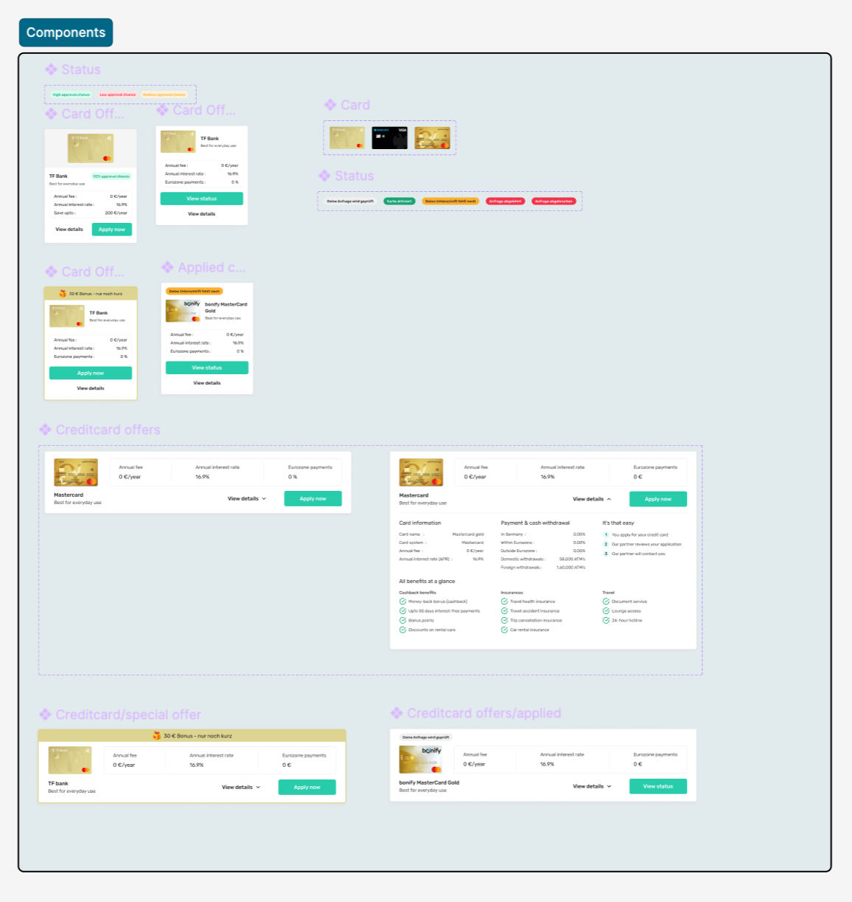

Every card looked the same
The marketplace presented every credit card the same way, regardless of who was looking. A user landed on a long list of near-identical offers and was left to do all the work themselves: compare cards manually, decode financial jargon, and somehow figure out which one actually suited them.
The result was cognitive overload. People couldn't tell which card was right for them, lost confidence in their own choice, and disengaged before applying. The offers weren't bad — the experience just gave nobody a reason to pick one over another.

Five problems kept surfacing: no personalization, weak differentiation between offers, limited filtering, important decision criteria buried, and users left unsure which card fit their profile.
What actually drives the choice
I started outside our own product. I benchmarked five marketplaces people already trust — Check24, NerdWallet, Forbes Advisor, Credit Karma, and Capital One — to see what each did well and where the opening was for us.

Across the research, the same handful of factors decided which card people chose — and they weren't evenly weighted.

That gave us four opportunity areas to design against: personalization, smarter comparison, better filtering, and confidence-building.

Designing for the decision, not the card
The instinct was to redesign the card UI. The real job was to improve the decision. So instead of prettier cards, I built three things that reduced the work of choosing — each one drawn straight from the research.
Users didn't know whether they'd even qualify — and that uncertainty quietly killed applications. Using bonify's own credit data, I added a profile-based approval indicator (“90% approval chance”) so people could see, up front, which offers were realistic for them.

The old filters were hidden, vague, and demanded too many clicks. I rebuilt them around the criteria research said people decide on — and surfaced the most common ones as one-tap chips so narrowing the list took seconds, not a sub-menu hunt.


The old cards had information but no order — the things that drive a decision were buried in body text. I rebuilt the card around a priority hierarchy: welcome bonus, card identity, approval chance, annual fee, interest rate, savings potential, then the CTA. Everything a person needs to decide, in the order they need it.

Leads up 233%
The number that matters underneath the 233% is why it moved. People could finally identify a suitable card quickly, understand their approval likelihood, filter offers without friction, and compare the criteria that actually mattered:
- Quickly identify suitable cards instead of scanning an undifferentiated list.
- Understand approval likelihood before investing effort in an application.
- Filter relevant offers faster with criteria built around real decisions.
- Compare key financial criteria — fee, APR, rewards, savings — at a glance.
- Decide with confidence, guided toward fit rather than left to self-serve.
Decision support beats information
This started as a card redesign and became a marketplace-optimization project. The lesson held all the way through: personalization builds confidence — showing approval probability turned a wall of options into a short list of realistic ones.
"Users responded better when the experience guided them toward relevant offers — not when it presented everything equally."
Simpler comparisons improved decisions. Highlighting only the most important criteria cut cognitive load, and guiding people toward relevant offers beat showing them everything at once. The win wasn't a better-looking card — it was an experience that helped people choose.